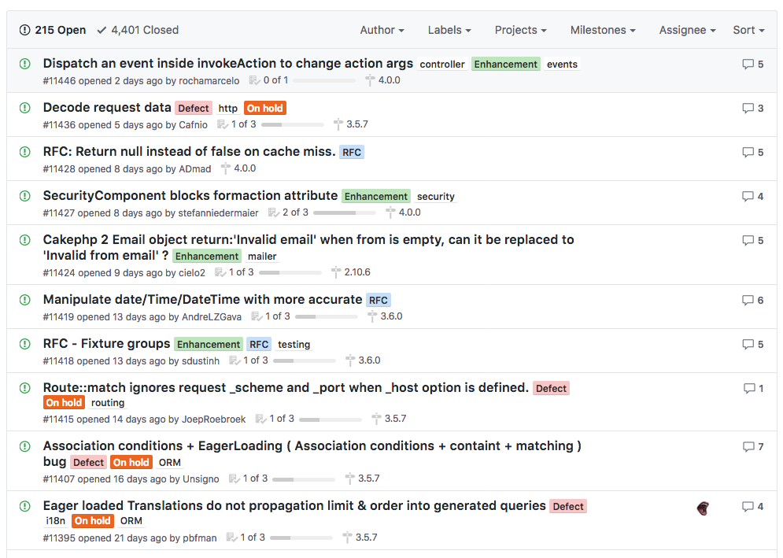
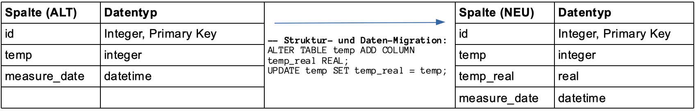

{% extends "../_base_template.html" %}
{% block title %}Lektion 15 - Change Requests {% endblock %}

{% block sections %}
<section data-markdown>
<textarea data-template>
<i class="fas fa-graduation-cap"></i> M151 - DB in Web-App einbinden
=============================

Heutiges Ziel
--------------

* Sie kennen die Bedeutung eines „Change Requests“
* Sie wissen, wie Sie Änderungen an Applikationen planen und durchführen

</textarea>
</section>

<section data-markdown>
<textarea data-template>
<i class="fas fa-graduation-cap"></i> Änderungen verwalten (Change Requests)
=============================


** Einleitung **
Ihre Web-Applikation in Version 1.0 ist erstellt und auf dem Server installiert. Nun können Sie einen Moment „Atem holen“.
Aber schon bald kommen die ersten Änderungswünsche oder Fehlermeldungen der Benutzer: „Könnte man nicht noch ...“,
„Wenn ich auf X klicke, dann kommt eine Fehlermeldung ..“. Sie fangen sich an, sich Gedanken zur nächsten Version zu machen.

Solche **„Change Request“** kommen in unterschiedlicher Form daher: von einfachen Mails bis zu seitenlangen Dokumentationen in standardisierter Form.

Gemeinsam an allen Formen ist, dass die Änderungen analysiert, eingeteilt, geplant und irgendwann umgesetzt werden müssen.

</textarea>
</section>

<section data-markdown>
<textarea data-template>
<i class="fas fa-graduation-cap"></i> Änderungen verwalten (Change Requests)
=============================

### Organisation

Die wichtigste Arbeit für Sie als "Empfänger" von Change Requests ist die Einteilung:
Teilen Sie die Meldungen ein in **Fehler** und **Änderungswünsche** und kategorisieren/priorisieren Sie diese. (siehe nächste Folien)

#### Fehler

**Priorität** | **Bedeutung**
--------------|----------------------
1             | Show-Stopper. Das Problem muss so schnell wie möglich behoben werden. Kein Aufschub bis zur nächsten Version möglich.
2             | Kritisches Problem. Ein Workaround ist möglich und wird dokumentiert, das Problem muss aber in der nächsten Version behoben werden.
3             | Nicht kritisch.Ein Workaround ist möglich und wird dokumentiert, das Problem wird in einer nächsten Version behoben.
4             | Kosmetisches Problem. Wird in einer nächsten Version behoben.

#### Änderungswünsche

**Kategorie** | **Bedeutung**
--------------|----------------------
1             | Kleinigkeit, einfach realisierbar. Wünschenswert. Wird in die nächste Version aufgenommen.
2             | Kleinigkeit, einfach realisierbar, nicht dringend. Wird in einer kommenden Version umgesetzt.
3             | Grösserer Aufwand notwendig, aber wünschenswert. Wird in einer der nächsten Versionen umgesetzt.
4             | Wünschenswert, aber vermutlich sehr grosser Aufwand mit Konsequenzen für die ganze Applikation. Benötigt weitere Abklärungen bezüglich Realisierungszeitpunkt und Machbarkeit.
5             | Realisierung nicht wünschenswert (Passt nicht ins Konzept der Applikation etc.)
6             | Realisierung unrealistisch, nicht machbar.
</textarea>
</section>

<section data-markdown>
<textarea data-template>
<i class="fas fa-graduation-cap"></i> Änderungen verwalten in einem Issue Tracking System
=============================

Sicher haben Sie schon mit Issue-Tracking-Systeme oder Ticket-Systemen zu tun gehabt.
Ein Issue-Tracking System vereinfacht Ihnen die Organisation der anliegenden Änderungen.

* Kennen Sie solche aus Ihrem Arbeitsalltag?
* Wie werden diese dort verwendet?

Ein paar Beispiele von Issue-Tracking-Systemen:
*  Simple Papier- oder Textfile-Todo-Liste
*  github Issues: Integriert in die github-Plattform und zentrale Kommunikationsplattform vieler OpenSource-Projekte
*  Redmine (http://www.redmine.org/): ausgereifte OpenSource-Plattform
*  Jira (https://www.atlassian.com/software/jira): kommerzielles Produkt, gehostet

**Beispiel**: Änderungswünsche in github (Projekt CackePHP)
(Quelle: https://github.com/cakephp/cakephp/issues)


</textarea>
</section>

<section data-markdown>
<textarea data-template>
<i class="fas fa-graduation-cap"></i> Organisation: Planen der kommenden Version
=============================


Sie haben nun eine Liste mit den Fehlern / Änderungswünschen. Sortieren Sie die Fehlermeldungen und Wünsche nach Priorität
und Kategorie und stellen Sie eine Liste zusammen, in der Sie festhalten, was in der nächsten und übernächsten Version
realisiert und korrigiert werden soll. Legen Sie auch einen Zeitplan fest.

Planen Sie ebenfalls genügend „Luft“ ein für eventuelle kritische Fehler, welche noch unbedingt geflickt werden müssen.

Planen Sie die einzelnen Änderungen. Überlegen Sie sich bei jeder Änderung folgende Punkte:
* **Welche Teile der Applikation** betrifft die Änderung, resp. an welchen Teilen müssen Sie Programmanpassungen vornehmen?
* **Welche Datenbank-Anpassungen** sind notwendig? <i class="far fa-hand-point-right"></i> Dokumentieren Sie SQL-DDL-Statements!
* **Wie lange** brauchen Sie ungefähr für die Umsetzung?
* **Welcher Benutzerkreis** ist von der Änderung betroffen? Müssen diese vorgängig / nach der Umsetzung informiert werden?
</textarea>
</section>

<section data-markdown>
<textarea data-template>
<i class="fas fa-flask"></i> Planen Sie eine Änderung! (Schüler-Übung)
=============================

Als kurze Übung planen Sie nun eine Änderung. Die folgende Meldung ist eingegangen:

**„Benutzer müssen deaktiviert werden können. Inaktive Benutzer dürfen sich nicht mehr einloggen können.“**

* Schreiben Sie sich folgende Punkte für die geplante Änderung auf:
  * Organisatorische Einteilung mit Begründung (Fehler / Wunsch, Priorität / Kategorie):
      * Warum die Kategorie (Fehler / Wunsch)?
      * Welche Priorität verpassen Sie der Änderung, und warum?
  * Beantworten Sie die **4 oben aufgezeigten Fragen** für diese Änderung.
* Stellen Sie Ihre Überlegungen kurz den anderen Mitschülern vor.
* Zeit: 15min

Hier nochmals die 4 Fragen:

* **Welche Teile der Applikation** betrifft die Änderung, resp. an welchen Teilen müssen Sie Programmanpassungen vornehmen?
* **Welche Datenbank-Anpassungen** sind notwendig?
* **Wie lange** brauchen Sie ungefähr für die Umsetzung?
* **Welcher Benutzerkreis** ist von der Änderung betroffen? Müssen diese vorgängig / nach der Umsetzung informiert werden?
</textarea>
</section>

<section data-markdown>
<textarea data-template>
<i class="fas fa-flask"></i> Eine Web-Applikation updaten
=============================

Auf dem Server läuft die aktuelle Version der Applikation und der Datenbank. Die nächste Version ist bereit und muss nur noch installiert werden.
Ist dies so einfach, wie es hier steht? Manchmal, ja, aber nicht immer: Ihre Applikation ist eine Web-Applikation und daher in vielen Fällen 24 Stunden erreichbar. Können Sie es sich leisten, die Applikation einfach abzuschalten, um die neue Version zu installieren?

Welche Möglichkeiten haben Sie?

Überlegen Sie sich kurz, wie Sie in verschiedenen Szenarien vorgehen. Welche Schritte müssen  Sie planen, um den Update reibungslos durchzuführen?

* **Szenario 1**: Die Web-Applikation kann gut für eine Stunde abgeschaltet werden.
* **Szenario 2**: Die Web-Applikation wird rund um die Uhr von eingeloggten Benutzern verwendet. Abschalten ist für ca. 30 Minuten möglich, aber nur, wenn keine Benutzer mehr eingeloggt sind.
* **Szenario 3**: Abschalten ist kaum möglich: Die Applikation wird ständig benutzt, und es stehen umfangreiche, inkompatible Datenmigrationen für die neue Version an. Die Benutzer sollen jedoch von der Aktualisierung möglichst nichts merken.
</textarea>
</section>

<section data-markdown>
<textarea data-template>
<i class="fas fa-flask"></i> Eine Web-Applikation updaten
=============================

Gruppenarbeit zu zweit: Erstellen Sie für jedes Szenario ein Vorgehen (Step-by-Step-Ablauf). Überlegen Sie sich

*  die notwendigen Schritte
*  in welcher Reihenfolge diese durchgeführt werden
*  wie lange diese Schritte ungefähr dauern
*  welche Vor- und Nacharbeiten notwendig sind (vor dem Beginn und nach der Durchführung des Updates)
*  wie / wann / wer informiert werden muss.

Wir besprechen die Vorgehen dann in der Klasse. Zeit: ca. 20 min
</textarea>
</section>

<section data-markdown>
<textarea data-template>
<i class="fas fa-flask"></i> Mögliche Vorgehen bei den oben genannten Szenarien
=============================

**Szenario 1**: Die Web-Applikation kann gut für eine Stunde abgeschaltet werden.

Dies ist das einfachste Szenario: Hier können Sie folgende Schritte ohne weitere Massnahmen durchführen:
* Alte Applikation abschalten / vom Netz nehmen
* Code installieren
* SQL-Migrationen ausführen
* neue Applikation wieder starten
</textarea>
</section>

<section data-markdown>
<textarea data-template>
<i class="fas fa-flask"></i> Mögliche Vorgehen bei den oben genannten Szenarien
=============================

**Szenario 2**: Die Web-Applikation wird rund um die Uhr von eingeloggten Benutzern verwendet. Abschalten ist für ca. 30 Minuten möglich, aber nur, wenn keine Benutzer mehr eingeloggt sind.

Hier müssen Sie dafür sorgen, dass **die Benutzer vorgängig informiert werden**: Definieren Sie einen Stichzeitpunkt, zu dem alle Benutzer ausgeloggt sein müssen. Blockieren Sie zudem neue Logins ab diesem Zeitpunkt. Diese Programmfunktionalität muss natürlich vorgängig (also in der alten Version bereits) vorgesehen sein.

Nun müssen Sie noch entscheiden, was mit den noch eingeloggten Benutzern passiert, welche zum Stichzeitpunkt nicht ausgeloggt sind: **„Schmeissen“ Sie diese raus, oder warten Sie?**

Sobald Sie keine Benutzer mehr online haben, können Sie wie in Szenario 1 vorgehen. Stellen Sie jedoch sicher, dass Sie innerhalb der genannten Zeit fertig sind und Ihre Applikation wieder verfügbar ist.
</textarea>
</section>

<section data-markdown>
<textarea data-template>
<i class="fas fa-flask"></i> Mögliche Vorgehen bei den oben genannten Szenarien
=============================

**Szenario 3**: Abschalten ist kaum möglich, und es stehen inkompatible Änderungen an

Dies ist mit Abstand das schwierigste Szenario. Sie haben zwei Probleme, welche sich gegenseitig „in die Quere kommen“:

1. Sie dürfen die Applikation nicht abschalten
2. Sie müssen Datenbank- und Programmanpassungen vornehmen, die mit der jetzigen Version nicht kompatibel sind.

Beide Punkte einzuhalten, ist sehr schwierig. Ich sehe in einer solchen Situation zwei Möglichkeiten:

**Möglichkeit 1**: neue Version parallel aufziehen

1. Installieren Sie die neue Version inkl. Daten parallel zur alten Version.
2. Schalten Sie zu einem definierten Zeitpunkt (User informieren!) die alte Version ab, und unter derselben URL die neue Version auf.
3. Nun müssen Sie noch dafür sorgen, dass zwischenzeitliche Änderungen in der alten Version auf die neue übertragen werden. Dies ist in jedem Fall „Handarbeit“, d.h. Sie müssen die Daten alt ↔ neu vergleichen und aktualisieren. Dies können Sie beispielsweise auf Datenbank-Ebene mit SQL tun.

</textarea>
</section>

<section data-markdown>
<textarea data-template>
<i class="fas fa-flask"></i> Mögliche Vorgehen bei den oben genannten Szenarien
=============================

** Möglichkeit 2**: Datenbank-Änderungen kompatibel behalten, Aufräumarbeiten nach dem Update

Setzen Sie Ihre Änderungen so um, dass sowohl die alte wie auch die neue Applikation mit der neuen Datenstruktur klarkommen. Halten Sie Datenbank-Anpassungen also kompatibel.

Beispiel:

Eine Tabelle „Temperatur“ hält gemessene Temperatur-Werte als Ganzzahlen fest. Nun soll die Temperatur genauer erfasst werden, es müssen also reele Zahlen erfasst werden können. Dies bedingt:

* eine Anpassung im User-Interface: Der Benutzer muss reele Zahlen anstatt Ganzzahlen eingeben können
* die Tabelle muss neu anstatt Integer- nun Real-Werte speichern.

Die neue und die alte Version des Datenmodells ist nicht kompatibel. Führen Sie in diesem Fall die neue Spalte ZUSÄTZLICH ein:



Nun haben Sie beide Spalten, und sowohl die alte wie auch die neue Applikation können mit der Struktur umgehen.
Nun können Sie auch den Programmcode aktualisieren. NACH dem Update sind dann allerdings noch Aufräumarbeiten notwendig:

```
-- Nochmaliger Abgleich für zwischenzeitlich geänderte Werte:
UPDATE temp SET temp_real = temp WHERE measure_date > '(Update-Zeitpunkt)';
ALTER TABLE temp DROP COLUMN temp;
```
</textarea>
</section>
{% endblock %}
